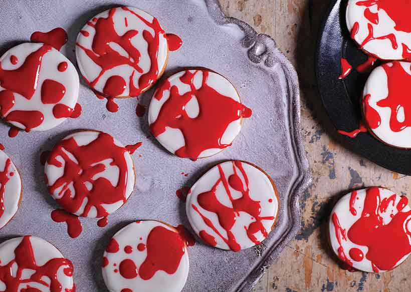

weet gingerbread is transformed into a terrifying treat with a splattering of red icing. An easy Halloween party idea – kids will love helping to decorate the biscuits with blood red icing.

Ingredients
For the gingerbread cookies
- 200g (7oz) plain flour
- ½ tsp baking powder
- 1 tsp ground ginger
- 1 tsp ground cinnamon
- 100g cold unsalted butter, cubed
- 75g (3oz) light brown soft sugar
- 1 large egg yolk
- 2 tbsp golden syrup
the icing
- 280g (9oz) royal icing sugar
2-3 tbsp lemon juice or water
red food colouring
Instructions
- Line 2 baking sheets with nonstick baking paper. Put the flour, baking powder and spices into a food processor. Whizz briefly, add the butter and pulse until it resembles fine breadcrumbs. Add the sugar and whizz again. Mix the yolk and syrup together then pour through the funnel with the motor running until the mixture starts to come together in clumps. Tip out onto a lightly floured surface, knead briefly, form into a flat disc, wrap in clingfilm and chill for 1 hour.
- Preheat the oven to gas 5,190°C, fan 170°C. Roll out the dough on a lightly floured surface to 5mm (1.4in) thick. Cut out 28 rounds using a 6cm (2 1/2in) cutter. Carefully transfer to 2 baking sheets. Bake for 10 minutes or until browned. Remove from the oven, leave to cool completely and then transfer to wire racks.
- To make the icing, mix nearly two thirds of the icing sugar with 2 tbsp lemon juice (just enough liquid so that it can be easily piped but won’t run – add more liquid/icing sugar to achieve the right consistency). Fill a small disposable piping bag (or a freezer bag with the corner snipped off) with about half the icing.
- Pipe clean lines around the edges of your cookies (just in from the edge), leave to dry for 10 minutes (keep the icing in the bowl covered to stop it drying out). Add a splash more lemon juice to the remaining icing, then using a teaspoon, spoon over your cookies flooding it right up to the lines. Leave to dry for 20 minutes.
- Mix the remaining icing sugar with 2 tsp water and enough red food colouring to make a deep blood colour. You want a runny consistency. Put the cookies on a large piece of foil, then using a pastry brush or fork splatter the cookies with the blood icing. Leave to dry completely before serving.